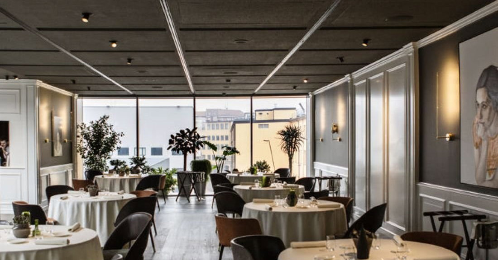
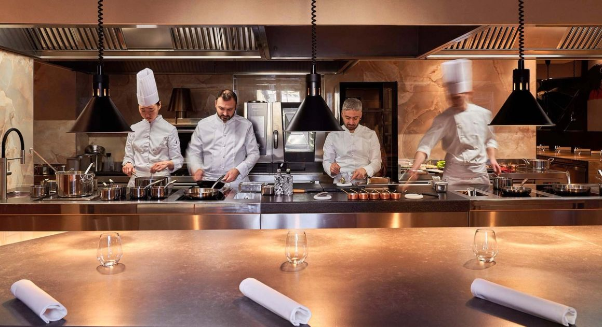
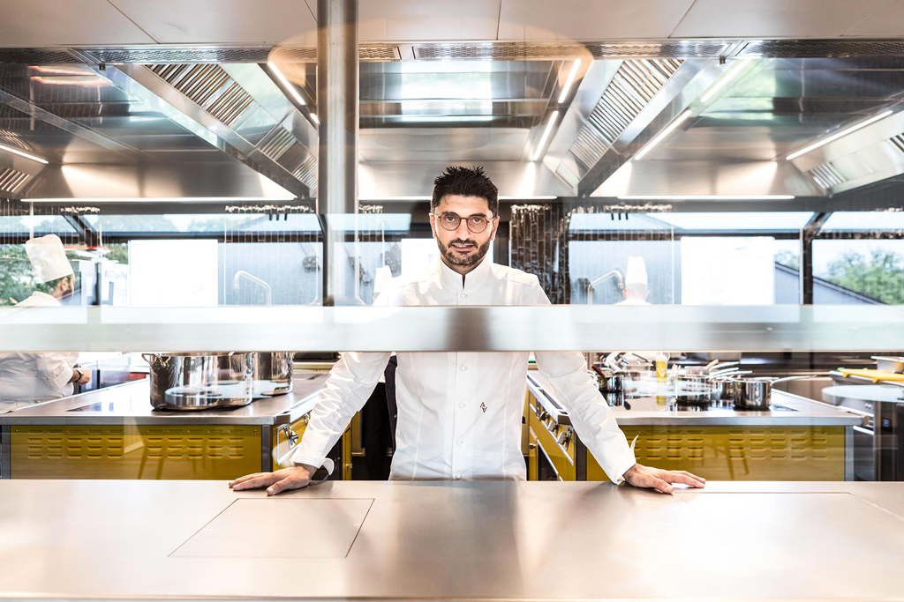
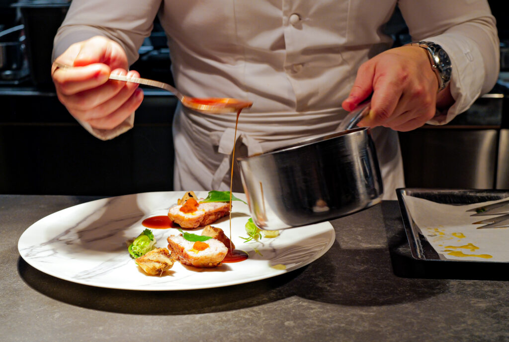

Milan · Lombardy · 2026 Guide
A Michelin
Weekend
in Milan
Five starred tables. Five neighborhoods. One architectural rule: pick the restaurant first — then let the geography cascade into the perfect day.
The Strategy
The restaurant is not the destination.
The neighborhood is.
Every one of Milan's five 2- and 3-star tables sits in a distinct district with a natural afternoon-to-dinner flow that no hotel concierge card has ever mapped. The Michelin guide ranks kitchens; it does not arrange your day. That dependency — restaurant to neighborhood to programme — is what this piece exists to surface.
The open question is singular: which closure pattern fits your travel dates? That single answer determines which table is reachable — and consequently which neighborhood, afternoon, and day trip make the coherent build.
Five Neighborhoods · Five Tables
Neighborhood 01 · Via Tortona & the canal belt
Tortona & Navigli

The flow — zero transport, entire day walkable: Fondazione Prada (also Via Tortona, the Rem Koolhaas campus) occupies the afternoon. Walk 10 minutes south to the Navigli canals for aperitivo at the water's edge. [4] Return north to the MUDEC museum's third floor for dinner. [3]
- Stars
- ⭐⭐⭐ Milan's sole three-star since 2020 — first in 26 years [16]
- From
- €270 pp before wine [2]
- Closed
- Sun–Mon
- Book
- 6–8 weeks ahead [2]
- Dress
- Smart-elegant
Signature: beetroot risotto with Evoluzione gorgonzola — ancient grain, blue cheese, root vegetable in a combination that shouldn't work but does. Off-menu cheese course with five pairings available on request. [21]
Neighborhood 02 · Via Andegari & the gallery triangle
La Scala & Brera
⭐⭐ Seta by Antonio Guida — Mandarin Oriental
The flow: The Duomo–Galleria–La Scala morning cluster is the city's canonical arc, with Seta as its natural dinner terminus. Spend the afternoon in Brera — Pinacoteca di Brera (closed Mondays), the galleries on Via Brera, aperitivo on Via Solferino. Then double back to Via Andegari 9 and the Mandarin Oriental's courtyard dining room. [5]
- Stars
- ⭐⭐ Two stars held here for over a decade
- From
- €180 pp; wine pairings €70–180 [26]
- Closed
- Sun–Mon
- Book
- 3–4 weeks ahead
- Dress
- Smart-elegant — enforced most strictly of the five
Signature: risotto alla Milanese with bone marrow — "the definitive version of that dish — nothing else in this city comes close on pure cooking precision." Mediterranean blue lobster with caviar and bergamot oil. [26]
Neighborhood 03 · Via Silvio Pellico, 2F above the piazza
Piazza del Duomo
⭐⭐ Verso Capitaneo — The Glamore Milano

The flow — the cathedral is the event: There is no pre-dinner programme here in the usual sense. Verso Capitaneo sits on the second floor directly above Piazza del Duomo. Your aperitivo is served while watching the façade glow in the late afternoon light. [6] Italy's fastest-rising table: two Michelin stars in ten months. [9]
- Stars
- ⭐⭐ 2 stars in 10 months — Italy's fastest ascent [9]
- From
- €250 pp (à la carte ~€50/dish) [9]
- Closed
- Tue–Wed — the only table open on Sunday
- Book
- 2+ months — the tightest queue [9]
- Kitchen
- Open-kitchen, three chef's-table rows facing the brigade [6]
Signature: fennel pollen risotto with morel mushrooms — "what a risotto." King crab spaghettoni with finger lime. Panettone soufflé with vanilla ice cream. [24]
Neighborhood 04 · Corso Venezia 52 & the fashion quarter
Quadrilatero & Porta Venezia
⭐⭐ Andrea Aprea — Fondazione Luigi Rovati
The flow: The Quadrilatero della Moda (Montenapoleone, Via della Spiga) fills the afternoon. Walk east through Porta Venezia — Milan's most Liberty-style neighborhood, architecturally coherent and residential in feel. Then take the hidden lift inside the Rovati Foundation at Corso Venezia 52 to the top-floor dining room: 36 seats, a panoramic view over Porta Venezia park, a 650-bottle cellar. [7]
- Stars
- ⭐⭐ Neapolitan storytelling in an art foundation
- From
- ~€205 avg, 6-course tasting menu [25]
- Closed
- Sun–Mon
- Book
- 2–3 weeks — the most accessible lead time
- Seats
- 36 only across 400 m² [7]
Signature: 'Caprese' under a hand-blown sugar dome — whipped mozzarella foam, preserved tomato, basil. 'The Selva egg' in a custom ostrich-shaped dome with confit yolk and Purgatorio sauce. [23]

Day trip · 15 km west — Piazza della Chiesa 14, Cornaredo
Cornaredo
⭐⭐ D'O by Davide Oldani — cucina pop

The flow — a deliberate departure: Take the S6 suburban train from Milano Centrale (~20 min) to Cornaredo, then a short taxi to the village piazza. Or drive west on the A50 (~30 min). The reward: the area's most affordable starred table and Davide Oldani's cucina pop — technically rigorous Italian cooking stripped of luxury-for-show. [18]
- Stars
- ⭐⭐ Most affordable two-star in the metro area
- From
- €155 pp tasting menu [19]
- Closed
- Sun–Mon (lunch & dinner Tue–Sat) [17]
- Book
- 4–6 weeks — "wait for a change of season" [18]
- Menus
- Molteplicità · Leggerezza · Esattezza (10 courses each) [18]
Chef trained under Marchesi and Ducasse. Philosophy: essential, flavour-forward, light without losing ambition. Despite the lowest price point of the five, demand is "fierce." [18]
The Decision Matrix
Closure Days — The Constraint That Decides Everything
Four of the five tables close Sunday–Monday. Verso Capitaneo closes Tuesday–Wednesday instead — making it the only option for a Sunday dinner, and the natural pick for a Codemotion-weekend when the conference runs into the weekend.
| Restaurant | Mon | Tue | Wed | Thu | Fri | Sat | Sun |
|---|---|---|---|---|---|---|---|
| Bartolini MUDEC ⭐⭐⭐ | ✕ | ✓ | ✓ | ✓ | ✓ | ✓ | ✕ |
| Seta ⭐⭐ | ✕ | ✓ | ✓ | ✓ | ✓ | ✓ | ✕ |
| Andrea Aprea ⭐⭐ | ✕ | ✓ | ✓ | ✓ | ✓ | ✓ | ✕ |
| Verso Capitaneo ⭐⭐ ← only Sunday option | ✓ | ✕ | ✕ | ✓ | ✓ | ✓ | ✓ |
| D'O ⭐⭐ (Cornaredo) | ✕ | ✓ | ✓ | ✓ | ✓ | ✓ | ✕ |
The Two Hard Bookings
Lock These First — Build Everything Around Them
The Last Supper and the starred dinner are the two genuine planning bottlenecks in a Milan weekend. Both involve timed drops; neither is walk-in territory in 2026. By early April 2026, all Last Supper entry-only slots through July were already sold. [15]
The Last Supper
Tickets release quarterly; weekly Wednesday-noon top-up for the following week. [8][15] Target the next Wednesday noon after locking travel dates.
The Starred Dinner
Book the restaurant the moment dates are fixed — before hotels, before anything. Verso Capitaneo: 2+ months. Bartolini MUDEC: 6–8 weeks. D'O: 4–6 weeks. Seta: 3–4 weeks. Andrea Aprea: 2–3 weeks. [2]
Timing the Trip
The October Window — For the Developer Who Also Eats Well
- Oct 8 Pirelli HangarBicocca opens Luciano Fabro retrospective — his first Milan show in 45+ years. [12]
- Oct 13 ServerlessDays Milano — single-day developer conference. [10]
- Oct 28–29 Codemotion Milan — two-day developer conference. Verso Capitaneo (open Thu–Mon) is the natural dinner pick: open across both conference days and the Sunday after. [11]
- All Oct Autumn is peak weather in Milan. [13] Post-Olympics tourism +45% YoY — book everything earlier than feels necessary. [14]
The convergence
Art, tech, food, and autumn light all peak in the same four-week window. The only Milan month where all three research threads — neighborhoods, restaurants, developer events — point at the same calendar block.
Italy tracking toward 66M international visitors in 2026. [14]
Sources
- [1] enricobartolini.net — MUDEC
- [2] restaurantsforkings.com — MUDEC
- [3] miahomeexperience.com — Fondazione Prada
- [4] milantips.com — Navigli
- [5] mandarinoriental.com — Seta
- [6] theglamoremilano.com — Verso
- [7] andreaaprea.com
- [8] cenacolovinciano.org — Last Supper
- [9] novacircle.com — Verso
- [10] serverlessdays.io/milano
- [11] conferences.codemotion.com/milan
- [12] fadmagazine.com — HangarBicocca
- [13] tickets-milan.com — best time
- [14] euronews.com — Olympics impact
- [15] untolditaly.com — Last Supper tickets
- [16] guide.michelin.com — 3-star 2026
- [17] guide.michelin.com — D'O
- [18] oadguides.com — D'O
- [19] scattidigusto.it — D'O prices
- [20] guide.michelin.com — new stars 2026
- [21] enprimeurclub.com — Bartolini
- [22] asignorinainmilan.com — full list
- [23] insidekentmagazine.co.uk — Aprea
- [24] lareinegourmande.com — Verso
- [25] thefork.com — Aprea
- [26] restaurantsforkings.com — Seta
- [27] ristoranteverso.com — reservations